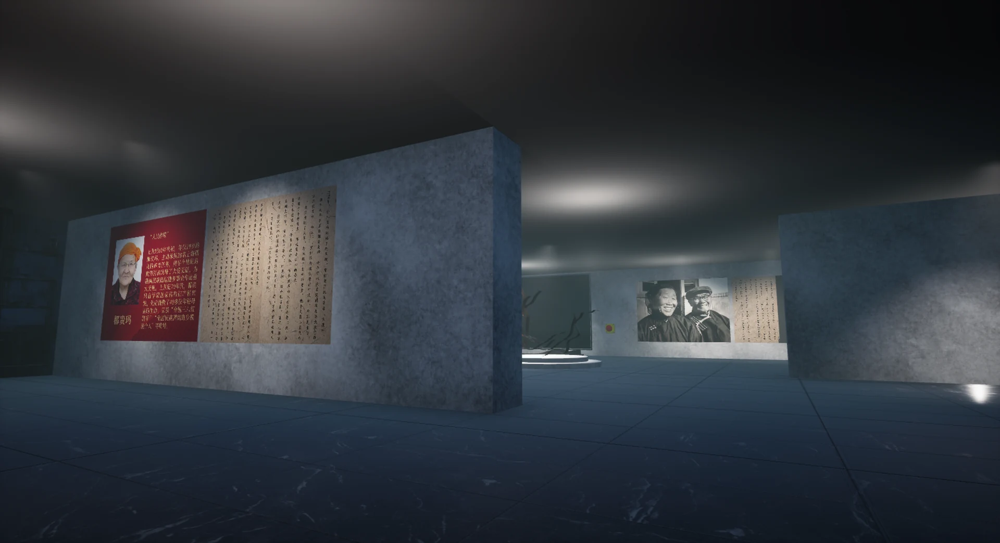

02 / Game / Interactive Narrative2025
Balance
Connect combat, level design and narrative through two worlds, questioning order and emotion while maintaining a system.
Across games, spaces and interaction,
I turn ideas into experiences you can explore.
 TIME BOUNDARY / 2026
TIME BOUNDARY / 2026Serious game · Card roguelike
Turn planning, execution, closure and rest into card choices, exploring how to set boundaries around unfinished work.
Connect combat, level design and narrative through two worlds, questioning order and emotion while maintaining a system.

Connect cultural stories through a yurt, train carriage and exhibition halls, using grabbing, video and spatial audio triggers.

Turn cultural clues from a Macao neighbourhood into exploration and collection tasks that connect field research with public experience.
Develop mechanics, level logic and feedback from behaviour and narrative, then explore the experience through UE5 prototypes.
Tell cultural stories through paths, objects and interactions, exploring how people move and pause in virtual exhibitions and public spaces.
Explore visual rules through code, rendering and web interfaces, making input, change and feedback perceptible.